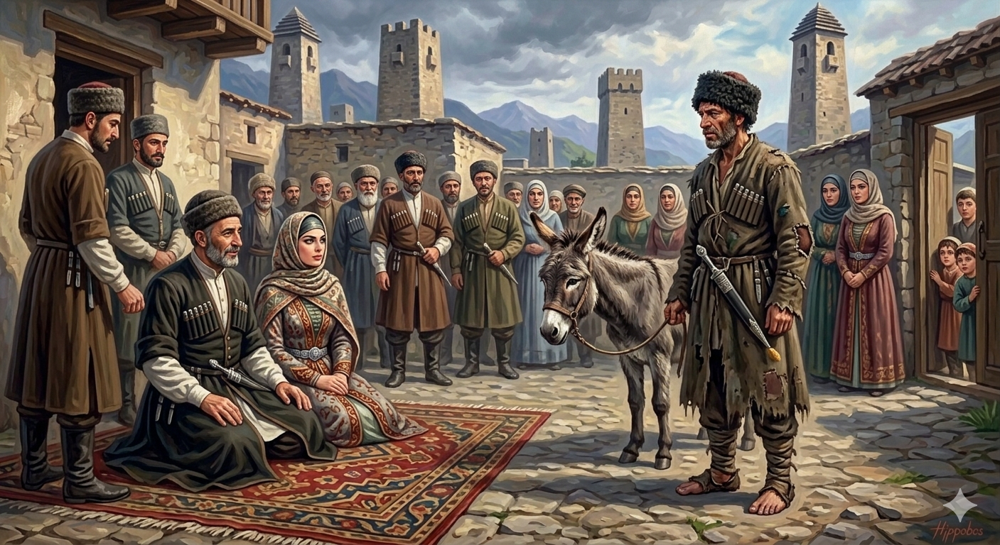

И.А. Дахкильгов. Хьехаме дувцарш - поучительные рассказы-притчи.
И.А. Дахкильгов. Хьехаме дувцарш - поучительные рассказы-притчи. Из ингушского фольклора.

Сесага майра хинна къонах
ЦӀи йолаш, торо йолаш, хьаькъал долаш волча цхьан къонахчо кхайкадаь хиннад: "Сесага майра вола къонах сона тӀавола, цу тайпарча сага дала къаьстта совгӀат да са кийчадаь долаш". Ше-ше сесага майра ва оалаш, цхьацца къонахий тӀаихаб. Нахага хоатташ, тӀавеначунга цхьацца хоатташ, гучадоалаш хиннад уж къонахий шоаш ма яххара болаш боацалга. ТӀеххьара венав цаӀ. МӀадаша диза, зарздаьнна чокхи дувхаш, ийттӀача нахьара маьчех пӀелгаш гуш, мустъенна кий туллаш, шалта бот баьттӀа хиларах шалта бухье хьажкӀа тум йоаллаш хиннав из. Вена из "нахьара маьчи" хьаэттача, хьаькъал долаш волча цу къонахчо аьннад шийна гонахьа болча нахага: - Хьажал укх хинжага! Цхьаккха хӀама дац цунга хатта дезаш. Цун куцах ховргда цун сибатах, дегӀа тӀарча гӀирсах ховргда из сесага майра волга. ДӀале цунна вай хьожадаь дола совгӀат. СовгӀата денна хиннад къаденна вир.
РУССКИЙ
Мужчина, который храбр перед женой
Некий умный, известный и богатый мужчина объявил: "Пусть явится ко мне тот, кто храбр перед своей женою. Если такой найдется, он получит подарок". Стали приходить мужчины и хвастаться, что они храбры перед своими женами. После расспросов людей и самого пришедшего заявителя выяснялось, что это не совсем верно. Наконец, явился некто. На нем была грязная, изодранная черкеска, из расползшихся сыромятных чувяк выглядывали пальцы ног, папаха была облезлая, ножны кинжала растрескались, и потому на кончик кинжала был нанизан катыш кукурузного початка. Увидя это чудище, тот умный мужчина сказал окружающим: "Посмотрите на эту рвань! Нет нужды ни о чем его расспрашивать: по его облику и одежде сразу видно, что он храбр перед женою. Отдайте ему оговоренный подарок". Дали ему в подарок старого осла.
ENGLISH
A man who is brave in front of his wife
A clever, famous and wealthy man announced: "Let him come to me who is brave in the presence of his wife. If such a man is found, he shall receive a gift." Men began to arrive and boast that they were brave in front of their wives. However, after questioning the claimants, it became clear that this was not entirely true. Finally, a man appeared. He wore a dirty, tattered Circassian coat, and his toes peeped out of his worn-out, split-leather boots. His fur hat was shabby, and the scabbard of his dagger was cracked, so a corn cob had been threaded onto the tip. Seeing this, the wise man said to those around him, "Look at this ragamuffin! There is no need to ask him anything; his appearance and clothing make it clear that he is a coward in the face of his wife. Give him the agreed gift." They gave him an old donkey.
НОХЧИЙН
Зудчуьнца майра хилла къонах
ЦIе йолуш, таро йолуш, хьекъал долуш волучу цхьана къонахчо кхайкхина хилла: "Зудчуьнца майра волу къонах суна тIевола, цу тайпане стагана дала къаьстина совгIат ду сан кечдина доллуш". Ша-ша зудчуьнца майра ву олуш, цхьацца къонахий тIеихна. Нахе хоттуш, тIевеъначуьнга цхьацца хоттуш, гучудолуш хилла уьш къонахий шаьш ма бахара болуш боцийла. ТIаьххьара веъна цхьаъ. Модех дуьззина, зарза даьлла чоа дуьйхина, эттIачу неIаран мачех пIелгаш гуш, мустбелла куй тиллина, шаьлтан ботт йаьттIа хиларх шаьлтан буьххье хьаьжкIан тIум йоллуш хилла иза. Веан и "неIаран мача" схьахIоьттича, хьекъал долуш волучу цу къонахчо аьлла шена гонаха болчу нахе: - Хьажал хIокху хинже! Цхьа а хIума дац цуьнга хатта дезаш. Цуьнан куьцах хуур ду цуьнан сибатах, дегIан тIера гIирсах хуур ду иза зудчуьнца майра волий. ДIало цунна вай хьажина долу совгIат. СовгIатан йелла хилла къанйелла вир.
ПОГОВОРКИ
Говра дирст еза, сесага шиш беза. Лошадь сдерживают уздечкой, а жену – уважением к себе. A horse is restrained with a bridle, a wife — with self-respect. Говрана дирс еза, зудчунна шен ларам беза.Дика Ӏунал даьча Ӏаждакха тӀа а Ӏажа латаш хул. И на березе вырастет яблоко, если за ней хорошо ухаживать. Even a birch tree will bear apples, if well tended. Дика хьоьжуш хилча, беречах а Ӏаж хир ду.Еккъа лоаттайича, пхьегӀа а яттӀ. Без употребления и посуда трескается. Left empty and unused, even a dish will crack. ПхьегӀа цхьаннах йиш хилча а, ялт хир ю.Зовза къонах сесага майра хул. Трусливый мужчина перед женою храбрится. A cowardly man acts brave in front of his wife. Ӏовда стаг зудчун хьалха майра хуьлу.Иккаш хулчех яьшаяц. Сапоги презирают чувяки. Boots disdain soft slippers. Эткаш иккхашка хьежаш йоцуш ю.Къаьна бежан, кхыметтале, къуша а дигац. Старую скотину даже воры не уводят. Old livestock — even thieves won't take it, being of no other use. Кхеана хьайбанах, кхин кхетор доцуш, къуй а дуьгуш дац.“Къонах ва” аларах хулаш вац къонах. Сколько ни тверди: “Я мужчина” – мужчиной не станешь. No matter how much you repeat "I am a man" — you won't become one. «Стаг ву со» аларца стаг а хуьлуш вац.Къонахчун барзкъах йовзаргъя цун сесаг. По одежде мужчины можно узнать, что у него за жена. By a man's clothing you can tell what kind of wife he has. Стеган духарх кхета мила зуда ю цуьнан.Пайда бац фуа чу чо лехарах. Бесполезно в яйце искать волос. It is useless to search for a hair inside an egg. ФайдацӀа ю Ӏайг чохь мас лехар.Сесага дикал-вол цун маьра барзкъах ейзай. По одежде мужа можно узнать, какая у него жена. By a husband's clothing you can tell what kind of wife he has. Мар йолчу духарх кхета цуьнан зуда мила ю.Сесаго шайтӀа а къардзаьд, сесаго сармак а эккхабаьб (фаьлгашкара). Жена (женщина) и черта одолела, и дракона прогнала (из сказок). A wife has overcome even a devil and driven off even a dragon (from folk tales). Зудчо шайтӀа а къардина, зудчо аждаха а эккхийтина (халкъан дийцаршкара).Цхьаьча сага топ яьннаяц. У одинокого и ружье не стреляет. A lone man's gun does not fire. ЦхьаннагӀчун топ ялуш яц.Яьккхачоа кийи, кхийттачоа мӀарги. Выигравшему – шапка, проигравшему – пинок. To the winner — a hat; to the loser — a kick. Даьккхинчунна куй, кхийттинчунна маж.